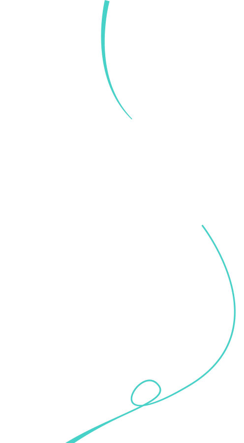
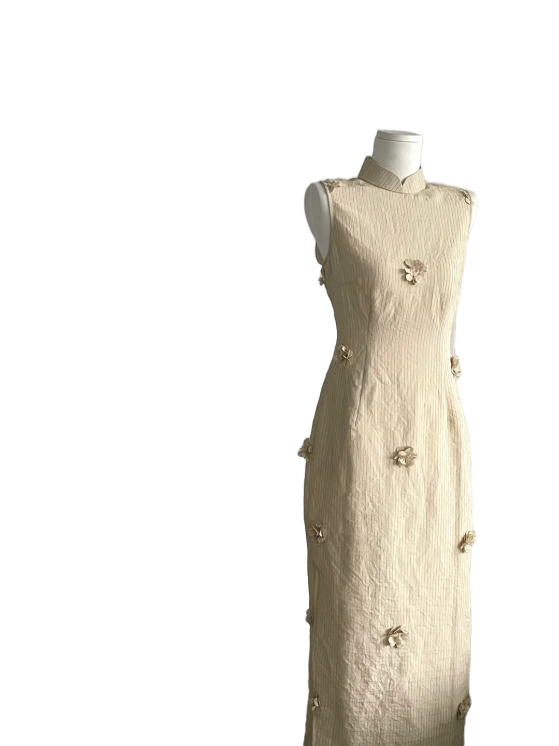
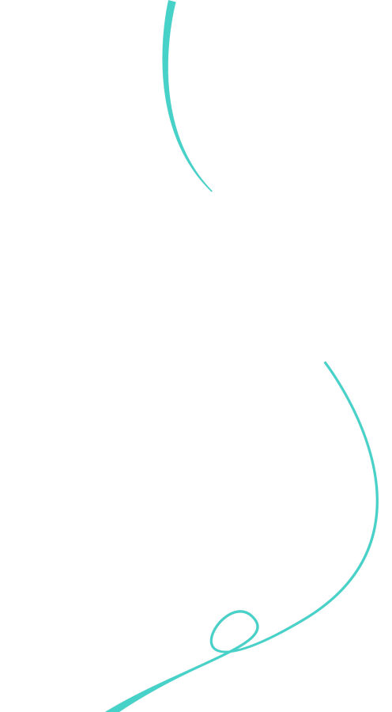
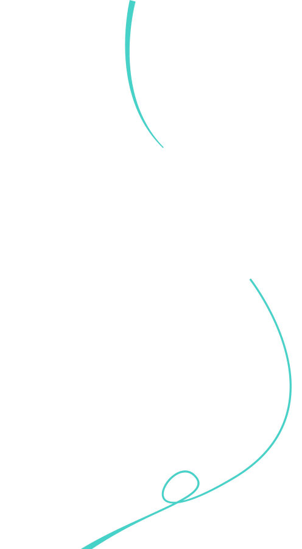
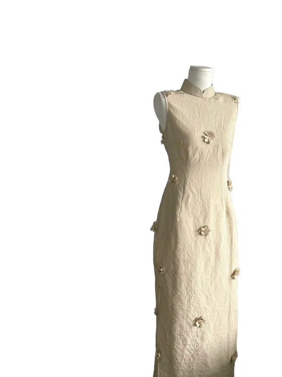
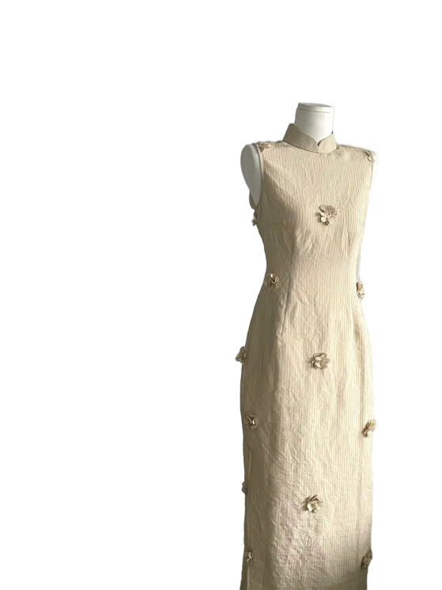

棉麻旗袍
面料特点
棉麻旗袍特点：天然棉麻面料，透气吸湿亲肤；麻料挺括、棉料柔软，混纺款质朴文艺；夏季凉爽排汗，厚款保暖；弹性低易皱缩（选购留余量），洗涤后更柔软，深色需防褪色；风格简约雅致，适合日常及中式场景。
面料
棉麻，由棉和麻纤维混纺而成，兼具棉质柔软舒适与麻质透气挺括的特性，纹理自然质朴，吸湿排汗性好
注意事项
棉麻旗袍穿着保养需注意：避免拉扯、选柔软内搭防染色，轻坐防皱；冷水手洗或轻柔机洗，深浅分开，勿搓拧漂白，阴干通风忌暴晒；低温垫布熨烫；清洁后悬挂或透气收纳，防蛀防霉。

 


 
